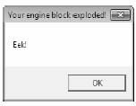

Simply put, late binding is a technique in which you are able to create an instance of a given type and invoke its members at runtime without having hard-coded compile-time knowledge of its existence. When you are building an application that binds late to a type in an external assembly, you have no reason to set a reference to the assembly; therefore, the caller’s manifest has no direct listing of the assembly.
At first glance, it is not easy to see the value of late binding. It is true that if you can “bind early” to an object (e.g., set an assembly reference and allocate the type using the C# new keyword), you should opt to do so. For one reason, early binding allows you to determine errors at compile time, rather than at runtime. Nevertheless, late binding does have a critical role in any extendable application you may be building. You will have a chance to build such an “extendable” program at the end of this chapter in the section “Building an Extendable Application”; until then, let’s examine the role of the Activator class.
The System.Activator class (defined in mscorlib.dll) is the key to the .NET late binding process. For the current example, you are only interested in the Activator.CreateInstance() method, which is used to create an instance of a type à la late binding. This method has been overloaded numerous times to provide a good deal of flexibility. The simplest variation of the CreateInstance() member takes a valid Type object that describes the entity you wish to allocate into memory on the fly.
Create a new Console Application named LateBindingApp, and import the System.IO and System.Reflection namespace via the C# using keyword. Now, update the Program class as follows:
// This program will load an external library, // and create an object using late binding. public class Program { static void Main(string[] args) { Console.WriteLine("***** Fun with Late Binding *****"); // Try to load a local copy of CarLibrary. Assembly a = null; try { a = Assembly.Load("CarLibrary"); } catch(FileNotFoundException ex) { Console.WriteLine(ex.Message); return; } if(a != null) CreateUsingLateBinding(a); Console.ReadLine(); } static void CreateUsingLateBinding(Assembly asm) { try { // Get metadata for the Minivan type. Type miniVan = asm.GetType("CarLibrary.MiniVan"); // Create the Minivan on the fly. object obj = Activator.CreateInstance(miniVan); Console.WriteLine("Created a {0} using late binding!", obj); } catch(Exception ex) { Console.WriteLine(ex.Message); } } }
Now, before you run this application, you will need to manually place a copy of CarLibrary.dll into the bin\Debug folder of this new application using Windows Explorer. The reason is that you are calling Assembly.Load(), therefore the CLR will only probe in the client folder (if you wish, you could enter a path to the assembly using Assembly.LoadFrom(), however there is no need to do so) .
Note Don’t set a reference to CarLibrary.dll using Visual Studio for this example! That will record this library in the client’s manifest. The whole point of late binding is that you are trying to create an object which is not known at compile time.
Notice that the Activator.CreateInstance() method returns a System.Object rather than a strongly typed MiniVan. Therefore, if you apply the dot operator on the obj variable, you will fail to see any members of the MiniVan class. At first glance, you may assume you can remedy this problem with an explicit cast:
// Cast to get access to the members of MiniVan? // Nope! Compiler error! object obj = (MiniVan)Activator.CreateInstance(minivan);
However, because your program has not set a reference to CarLibrary.dll, you cannot make use of the C# using keyword to import the CarLibrary namespace, and therefore you can’t use a MiniVan during the casting operation! Remember that the whole point of late binding is to create instances of objects for which there is no compile-time knowledge. Given this, how can you invoke the underlying methods of the MiniVan object stored in the System.Object reference? The answer, of course, is by using reflection.
Assume you wish to invoke the TurboBoost() method of the MiniVan. As you recall, this method will set the state of the engine to “dead” and display an informational message box. The first step is to obtain a MethodInfo object for the TurboBoost() method using Type.GetMethod(). From the resulting MethodInfo, you are then able to call MiniVan.TurboBoost using Invoke(). MethodInfo.Invoke() requires you to send in all parameters that are to be given to the method represented by MethodInfo. These parameters are represented by an array of System.Object types (as the parameters for a given method could be any number of various entities).
Given that TurboBoost() does not require any parameters, you can simply pass null (meaning “this method has no parameters”). Update your CreateUsingLateBinding() method as follows:
static void CreateUsingLateBinding(Assembly asm) { try { // Get metadata for the Minivan type. Type miniVan = asm.GetType("CarLibrary.MiniVan"); // Create the Minivan on the fly. object obj = Activator.CreateInstance(miniVan); Console.WriteLine("Created a {0} using late binding!", obj); // Get info for TurboBoost. MethodInfo mi = miniVan.GetMethod("TurboBoost"); // Invoke method ('null' for no parameters). mi.Invoke(obj, null); } catch(Exception ex) { Console.WriteLine(ex.Message); } }
At this point, you will see the message box shown in Figure 15-2, once the TurboBoost() method is invoked.
Figure 15-2 Late-bound method invocation
When you wish to use late binding to invoke a method requiring parameters, you will package up the arguments as a loosely typed array of objects. Recall that version 2.0.0.0 of CarLibrary.dll defined the following method in the Car class:
public void TurnOnRadio(bool musicOn, MusicMedia mm) { if (musicOn) MessageBox.Show(string.Format("Jamming {0}", mm)); else MessageBox.Show("Quiet time..."); }
This method takes two parameters: a Boolean representing if the automobile’s music system should be turned on or off, and an enum which represents the type of music player. Recall this enum was structured as so:
public enum MusicMedia { musicCd, // 0 musicTape, // 1 musicRadio, // 2 musicMp3 // 3 }
Here is a new method of the Program class, which invokes TurnOnRadio(). Notice that you are using the underlying numerical values of the MusicMedia enumeration, to specify a “radio” media player.
static void InvokeMethodWithArgsUsingLateBinding(Assembly asm) { try { // First, get a metadata description of the sports car. Type sport = asm.GetType("CarLibrary.SportsCar"); // Now, create the sports car. object obj = Activator.CreateInstance(sport); // Invoke TurnOnRadio() with arguments. MethodInfo mi = sport.GetMethod("TurnOnRadio"); mi.Invoke(obj, new object[] { true, 2 }); } catch (Exception ex) { Console.WriteLine(ex.Message); } }
Hopefully, at this point, you can see the relationships among reflection, dynamic loading, and late binding. To be sure, the reflection API provides many additional features beyond what has been covered here, but you should be in good shape to dig into more details if you are interested.
Again, you still may wonder exactly when you might make use of these techniques in your own applications. The conclusion of this chapter should shed light on this question; however, the next topic under investigation is the role of .NET attributes.
Source Code The LateBindingApp project is included in the Chapter 15 subdirectory.